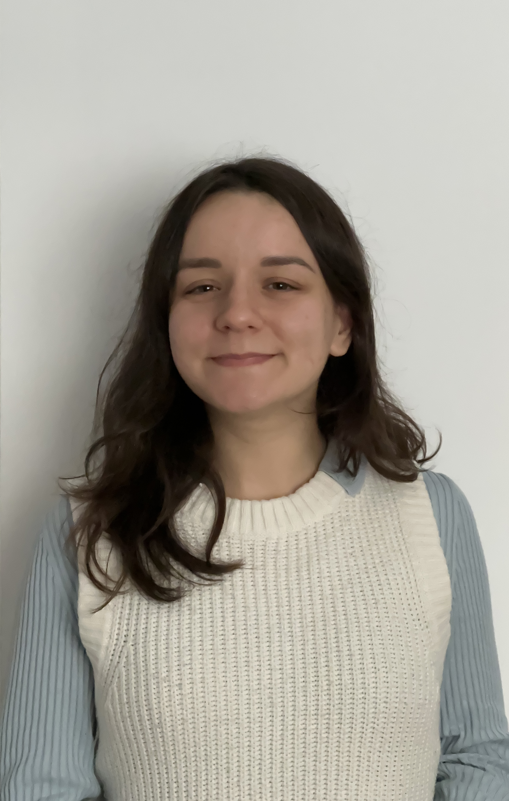

About Me
I’m someone who loves rolling up my sleeves, diving in, and making things happen. I enjoy working, learning, and knowing that I’m contributing to something meaningful. Being part of committed teams, where there’s room to grow, collaborate, and create real impact, is what drives me. I’m naturally curious and always seeking new challenges. I've never been one to stand still because continuous learning and growth are in my DNA. Throughout my journey, I’ve developed versatility, confidence, and a strong ability to adapt. Above all, I believe in doing work with purpose, creativity, and dedication. Right now, I’m looking for a new opportunity that challenges me and helps me keep growing.